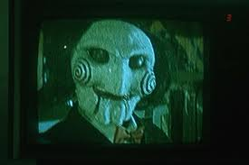

¿Quién soy?
Mi nombres es Ken, actualmente tengo 19 años (ya casí cumpliré los 20)
y bueno para hablar de mi pues puedo decirles que mis gustos son la música,
los videojuegos
porque me hacen desconectar de la realidad, al igual que soy muy fan de la programación (más backend que frontend) jejeje.
Ahora hablemos sobre mis gustos...
Para entrar con más detalles sobre lo que me gusta, empecemos, para inciar me gustan las películas de romance y terror, tegno 2 péliculas en estas cartas que les mostraré, y sobre uno de los videojuegos que me han marcado.

La saga de Saw
Hablando de películas, esta saga es mi favorita si podría decirse que es de "terror", mas que la violencia me gusta su historia, pero eso si, es +18.


Mis hobbies
Me gusta programar, leer y ver cine.